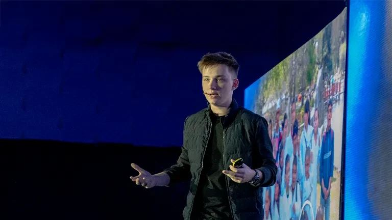

Conferences · Tech
Festival incMTY 2027
- Dates
- –
- Venue
- Tecnológico de Monterrey, Campus Monterrey
- Location
- Monterrey, Mexico
- Format
- In-person
- Category
- Tech
- Industry
- Entrepreneurship / Innovation
- Organiser
- incMTY (Tecnológico de Monterrey)
- Expected attendance
- 3,500
- Official website
- https://incmty.com/es/festival
About
14th edition; venues listed on the official page are Campus Monterrey and Expedition FEMSA. Mexico dates are local (Mexico City time, UTC-6, unless the venue is in another Mexican time zone).
Topics: startups, entrepreneurship, innovation, technology, creative industries.
Tec de Monterrey news (20 Nov 2026): incMTY 2027 projects 3,500 young people, about 700 artists and 700+ business people (a 2027 projection; 3,500 used).
Sources
- Official — https://incmty.com/es/festival
- Official (Tecnológico de Monterrey news) — https://conecta.tec.mx/es/noticias/nacional/emprendedores/asi-sera-incmty-2027-mas-arte-cultura-y-talento-emprendedor